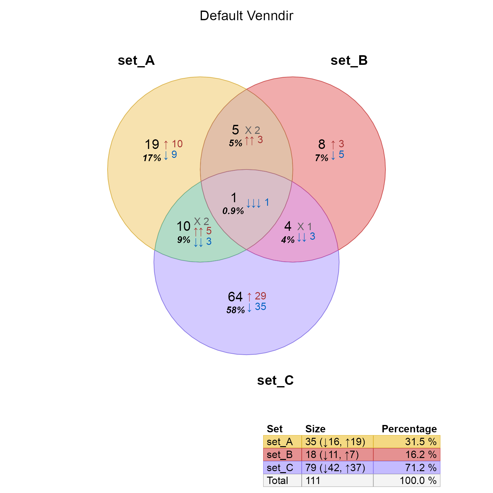
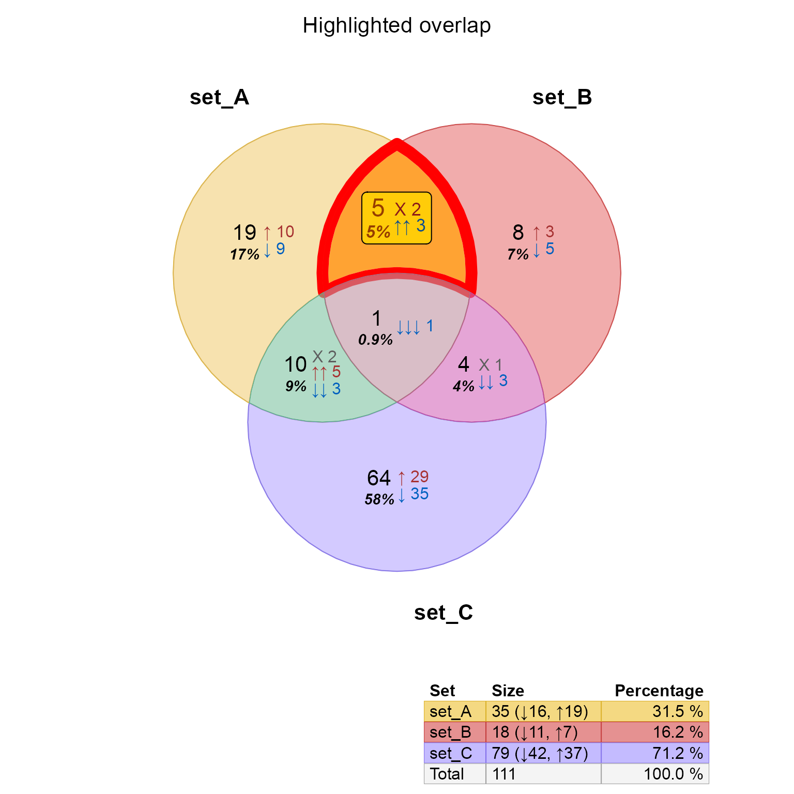
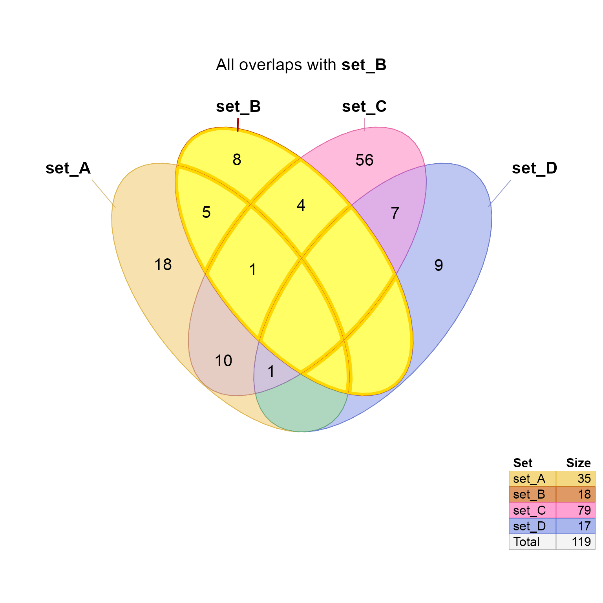
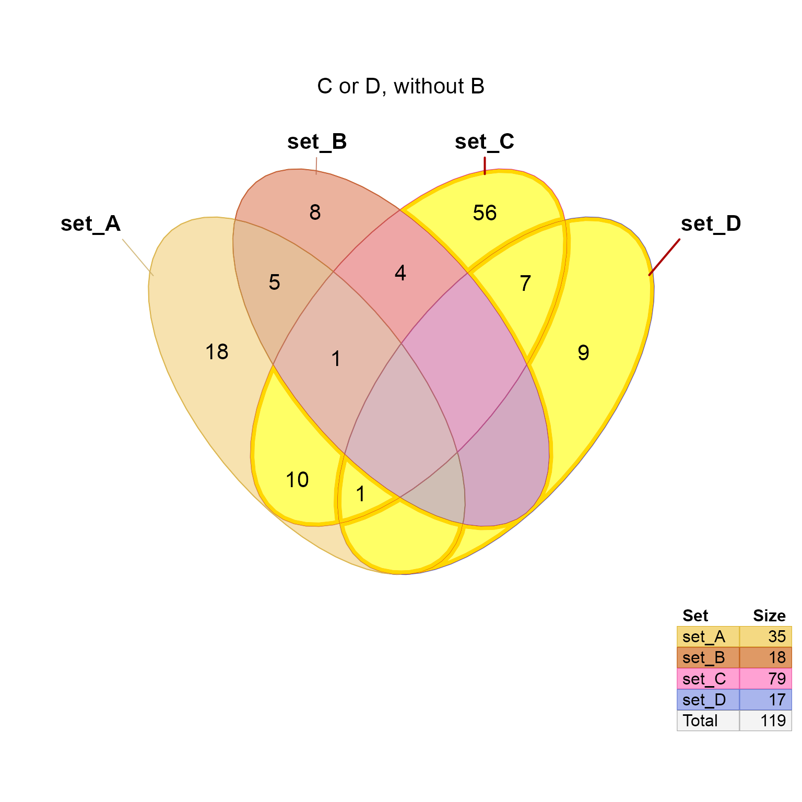
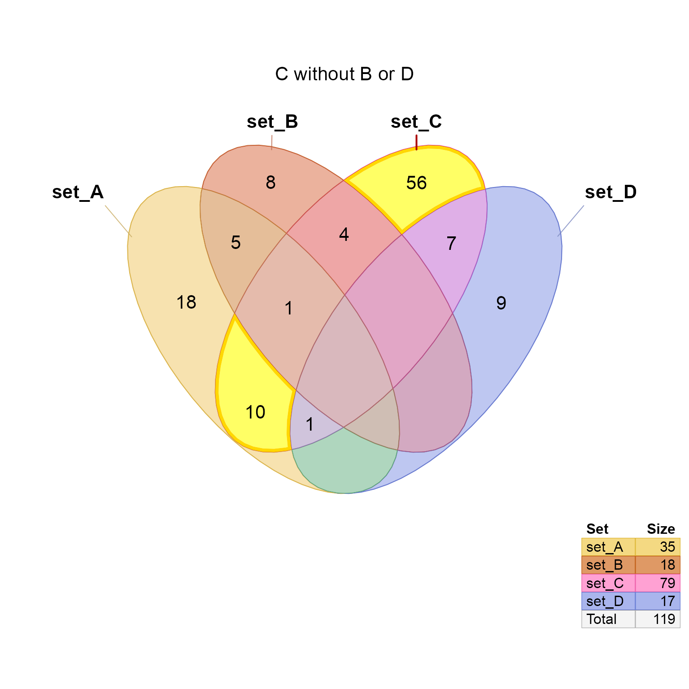
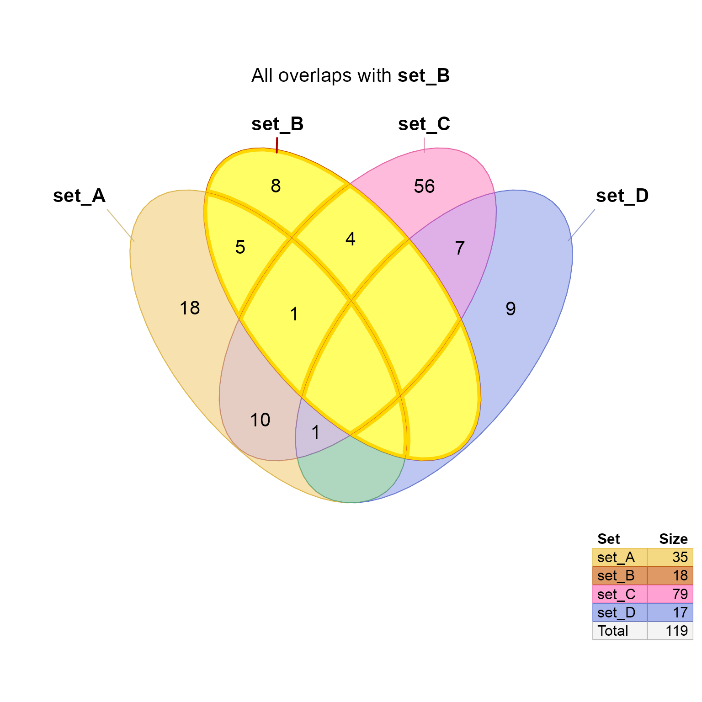
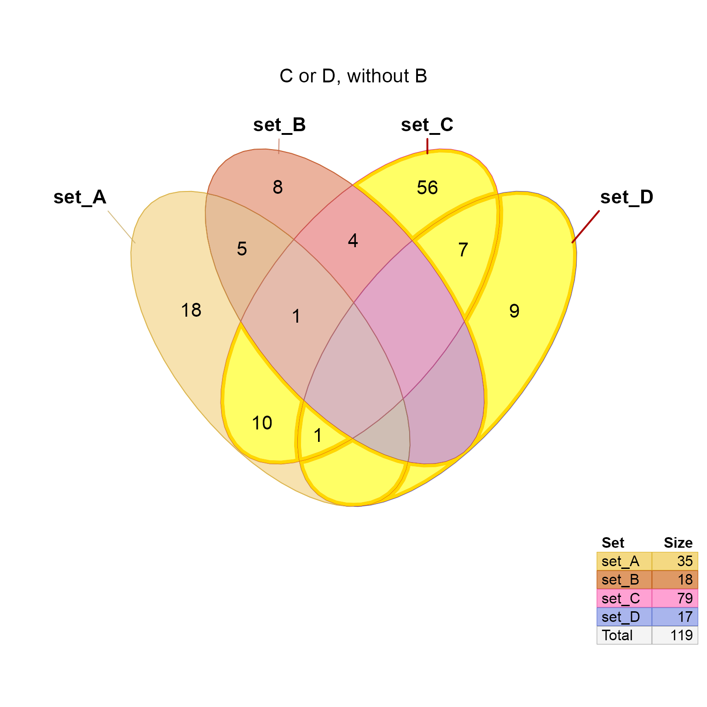
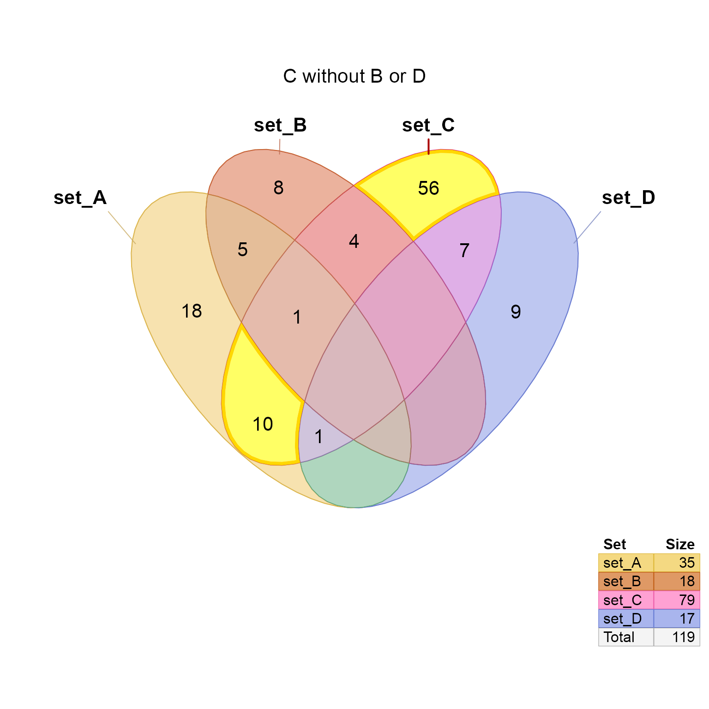
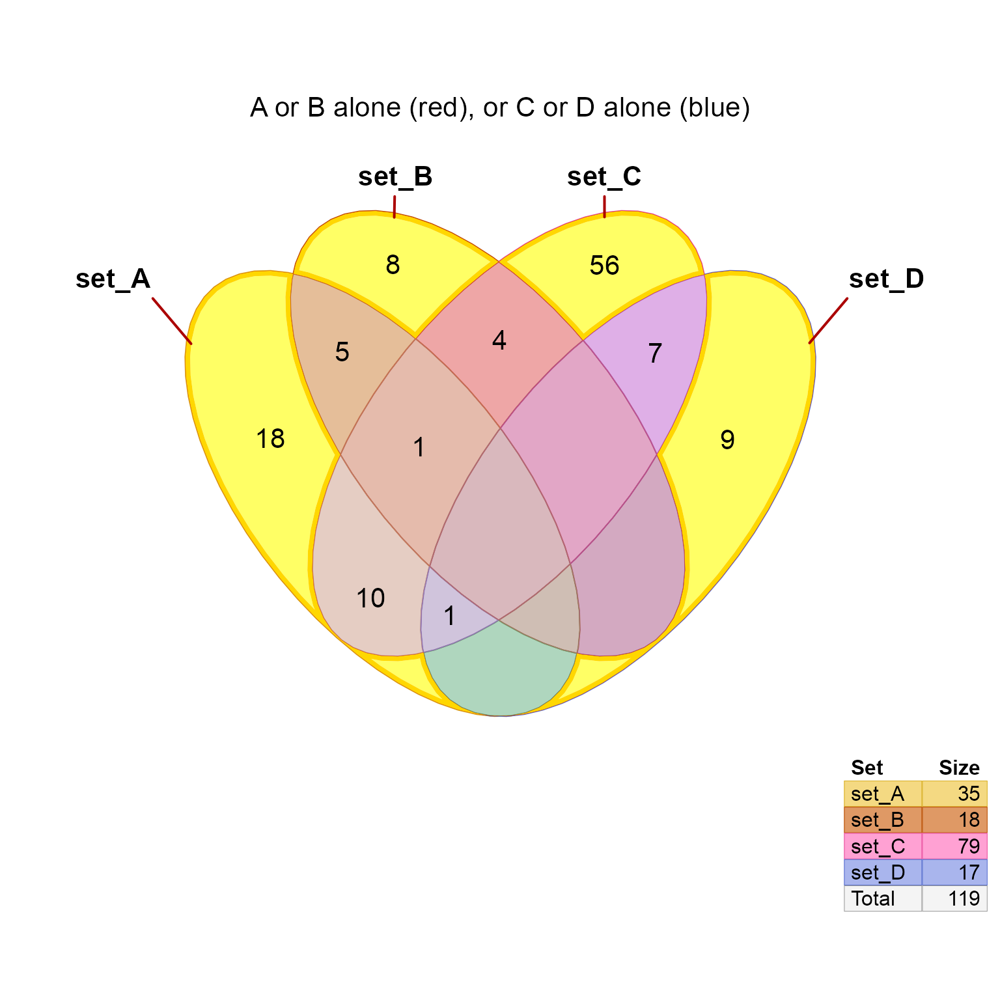
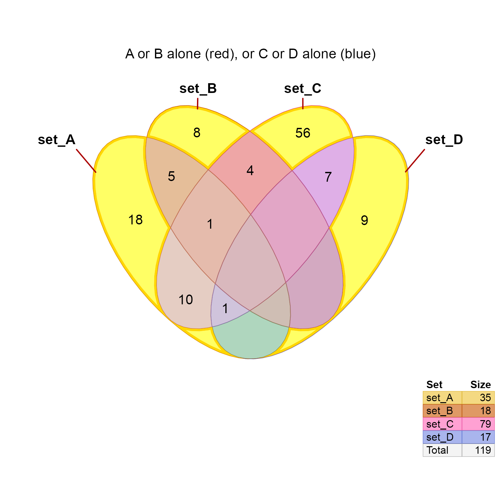

Modify Venndir visual components by overlap name
Highlight Venndir visual components by overlap name by calling
modify_venndir_overlap()
Usage
modify_venndir_overlap(
venndir_output,
overlap_set,
params = NULL,
reorder = FALSE,
debug = FALSE,
...
)
highlight_venndir_overlap(
venndir_output,
overlap_set,
innerborder = "gold",
innerborder.lwd = 2,
border = "red3",
border.lwd = 1,
outerborder = innerborder,
outerborder.lwd = 0,
fill = "yellow",
params = list(fill = fill, innerborder = innerborder, innerborder.lwd =
innerborder.lwd, border = border, outerborder = outerborder, outerborder.lwd =
outerborder.lwd),
reorder = TRUE,
...
)Arguments
- venndir_output
Venndirobject- overlap_set
characterstring with an overlap set present in thevenndir_outputobject.- params
listof parameters to modify for the chosenoverlap_set. Note that params with prefix"label."will be applied only to labels after removing the"label."prefix. For example:"label.fill"will apply the value to the"fill"color for the associated count label. Recognized parameter names:alpha- alpha transparency to apply to the Venn fill colorfill- fill color for the Venn overlap polygon. Note thatalphais applied to this color, so to control both, thealphamust also be supplied with custom value.innerborder,innerborder.lwd- innerborder color and line width.outerborder,outerborder.lwd- outerborder color and line width. The default is NA for overlap polygons, since the outerborder is defined only for the main set.border,border.lwd- border, displayed "on the line" between inner and outer border. The default is NA, since these lines are over-plotted when two Venn polygons are adjacent.fontsize-numericvalue applied tojpsandlabel_df. When there are multiple labels, values are assigned in order. Usually: main count, then signed count(s).label.border,label.fill,label.lwd,label.lty- applied to slot"label_df"columns"border","fill","lwd", and"lty"respectively. They control the optional label border,fill,lwd,lty to allow custom styling for a specific overlap set.label.padding,label.padding_unit,label.r,label.r_unitapplied to slot"label_df"columns"padding","padding_unit","r", and"r_unit"respectively. They control the optional label padding and r (corner radius) and are passed togridtext:richtext_grob(). They may be useful to adjust the label border relative to the fontsize.
Other tips for customization
The label placement can be customized using
nudge_venndir_label(), which allows moving the inside or outside labels for each overlap set. When customizing the overlap set label fontsize, and border, it may be useful to move the labels to minimize overlaps.
- fill, innerborder, innerborder.lwd, border, border, lwd, outerborder, outerborder.lwd
passed to
paramsas convenient way to specify those elements. The default scenario uses innerborder with slightly darker border to be visible between adjacent border lines. To show the outerborder, useouterborder.lwd=2or higher.- bordercolor
charactercolor, provided as a convenient way to specify bothinnerborderandouterborderinparams.
Details
This function provides a convenient method to modify visual features
of Venndir objects defined by overlap set. By "overlap set" it refers
to definitive sets, for example "set_A" refers to elements in "set_A"
which are not also present in any other set in the Vennlist.
Similarly "set_A&set_B" refers to elements only present in both
"set_A" and "set_B" and no other set in the Vennlist.
See also
Other venndir utility:
curate_venn_labels(),
expand_range(),
get_venndir_curate_df(),
make_color_contrast(),
make_venn_combn_df(),
make_venn_test(),
match_list(),
nudge_venndir_label(),
plot,Venndir,ANY-method,
print_color_df(),
shrink_df(),
three_point_angle(),
venndir_legender(),
venndir_to_df()
Examples
testlist <- make_venn_test(n_sets=3, do_signed=TRUE);
vo2 <- venndir(testlist,
show_labels="Ncsp",
show_segments=FALSE,
main="Default Venndir");

vo2m <- modify_venndir_overlap(vo2,
overlap_set="set_A&set_B",
params=list(fill="darkorange", alpha=0.8,
innerborder="red", innerborder.lwd=3,
outerborder="red", outerborder.lwd=3,
fontsize=c(18, 13, 13, 13),
label.border="black",
label.padding=c(5, 1, 1, 1), label.r=c(5, 1, 1, 1),
label.color=c("darkorange4", "firebrick4", "dodgerblue4", "grey44"),
label.fill=jamba::alpha2col("gold", alpha=0.8)
));
render_venndir(vo2m, main="Highlighted overlap");

# nudge the label slightly higher
vo2mb <- nudge_venndir_label(vo2m,set="set_A&set_B",
x_offset=-0.01, y_offset=0.08,
label_location="inside");
render_venndir(vo2mb, main="Highlighted overlap");
# nudge a few labels using offset_list
vo2mc <- nudge_venndir_label(vo2m,
offset_list=list(`set_A&set_B`=c(-0.01, 0.08),
`set_A&set_C`=c(0, -0.03),
`set_B&set_C`=c(0.04, -0.03),
`set_A`=c(-0.02, 0),
`set_B`=c(0.02, 0)),
label_location="inside");
vo2mc <- nudge_venndir_label(vo2mc,
set=c("set_A", "set_B"), align_y="top")
render_venndir(vo2mc, main="Highlighted overlap,\nnudged labels");
 # to control drawing order, place one polygon at the end of the line
vo2md <- vo2mc;
vo2md@jps <- vo2mc@jps[c(1:6, 8:10, 7),]
render_venndir(vo2md, main="Altered drawing order");
# modify multiple overlap_sets at once
vo2multi2 <- modify_venndir_overlap(vo2,
overlap_set=c("set_A", "set_B", "set_C"),
params=list(fill=c("gold", "gold", "gold"),
alpha=0.8,
innerborder="red",
innerborder.lwd=3,
fontsize=list(c(18, 13, 13, 13)),
label.border="black",
label.fill=jamba::alpha2col("palegoldenrod", alpha=0.8)
), reorder=TRUE);
render_venndir(vo2multi2, main="Multiple effects at once");
# to control drawing order, place one polygon at the end of the line
vo2md <- vo2mc;
vo2md@jps <- vo2mc@jps[c(1:6, 8:10, 7),]
render_venndir(vo2md, main="Altered drawing order");
# modify multiple overlap_sets at once
vo2multi2 <- modify_venndir_overlap(vo2,
overlap_set=c("set_A", "set_B", "set_C"),
params=list(fill=c("gold", "gold", "gold"),
alpha=0.8,
innerborder="red",
innerborder.lwd=3,
fontsize=list(c(18, 13, 13, 13)),
label.border="black",
label.fill=jamba::alpha2col("palegoldenrod", alpha=0.8)
), reorder=TRUE);
render_venndir(vo2multi2, main="Multiple effects at once");
 # modify multiple overlap_sets at once
vo2multi3 <- modify_venndir_overlap(vo2,
overlap_set=c("set_A&set_B", "set_B&set_C", "set_A&set_C",
"set_A&set_B&set_C"),
params=list(fill=c("gold"),
alpha=0.8,
border="red4",
innerborder="red",
innerborder.lwd=3,
label.border="black",
label.fill=jamba::alpha2col("palegoldenrod", alpha=0.8)
), reorder=TRUE);
render_venndir(vo2multi3, main="Multi-overlaps highlighed");
# modify multiple overlap_sets at once
vo2multi3 <- modify_venndir_overlap(vo2,
overlap_set=c("set_A&set_B", "set_B&set_C", "set_A&set_C",
"set_A&set_B&set_C"),
params=list(fill=c("gold"),
alpha=0.8,
border="red4",
innerborder="red",
innerborder.lwd=3,
label.border="black",
label.fill=jamba::alpha2col("palegoldenrod", alpha=0.8)
), reorder=TRUE);
render_venndir(vo2multi3, main="Multi-overlaps highlighed");
 testlist4 <- make_venn_test(n_sets=4, do_signed=FALSE)
vo4 <- venndir(testlist4, main="Default test case")
# show all sections with set_B
vo4h <- highlight_venndir_overlap(vo4,
overlap_set=unique(grep("set_B", vo4@jps@polygons$venn_name, value=TRUE)))
render_venndir(vo4h, main="All overlaps with **set_B**")

# show set_C or set_D not set_B
vo4h2 <- highlight_venndir_overlap(vo4, outerborder.lwd=0,
overlap_set=unique(grep("set_B", value=TRUE, invert=TRUE,
grep("set_C|set_D", vo4@jps@polygons$venn_name, value=TRUE)))
)
render_venndir(vo4h2, main="C or D, without B")

# show set_C not set_B or set_D
vo4h3 <- highlight_venndir_overlap(vo4,
overlap_set=unique(grep("set_B|set_D", value=TRUE, invert=TRUE,
grep("set_C", vo4@jps@polygons$venn_name, value=TRUE)))
)
render_venndir(vo4h3, main="C without B or D")

# show set_A and set_C, not set_D
vo4h4 <- highlight_venndir_overlap(vo4,
overlap_set=unique(grep("set_D", value=TRUE, invert=TRUE,
grep("set_A.+set_C", vo4@jps@polygons$venn_name, value=TRUE)))
)
render_venndir(vo4h4, main="A and C, without D")
# show set_A or set_B, each distinct
vo4h5 <- highlight_venndir_overlap(vo4,
outerborder.lwd=0,
overlap_set=unique(grep("&", value=TRUE, invert=TRUE,
grep("set_A|set_B", vo4@jps@polygons$venn_name, value=TRUE)))
)
render_venndir(vo4h5, main="A or B alone")
testlist4 <- make_venn_test(n_sets=4, do_signed=FALSE)
vo4 <- venndir(testlist4, main="Default test case")
# show all sections with set_B
vo4h <- highlight_venndir_overlap(vo4,
overlap_set=unique(grep("set_B", vo4@jps@polygons$venn_name, value=TRUE)))
render_venndir(vo4h, main="All overlaps with **set_B**")

# show set_C or set_D not set_B
vo4h2 <- highlight_venndir_overlap(vo4, outerborder.lwd=0,
overlap_set=unique(grep("set_B", value=TRUE, invert=TRUE,
grep("set_C|set_D", vo4@jps@polygons$venn_name, value=TRUE)))
)
render_venndir(vo4h2, main="C or D, without B")

# show set_C not set_B or set_D
vo4h3 <- highlight_venndir_overlap(vo4,
overlap_set=unique(grep("set_B|set_D", value=TRUE, invert=TRUE,
grep("set_C", vo4@jps@polygons$venn_name, value=TRUE)))
)
render_venndir(vo4h3, main="C without B or D")

# show set_A and set_C, not set_D
vo4h4 <- highlight_venndir_overlap(vo4,
overlap_set=unique(grep("set_D", value=TRUE, invert=TRUE,
grep("set_A.+set_C", vo4@jps@polygons$venn_name, value=TRUE)))
)
render_venndir(vo4h4, main="A and C, without D")
# show set_A or set_B, each distinct
vo4h5 <- highlight_venndir_overlap(vo4,
outerborder.lwd=0,
overlap_set=unique(grep("&", value=TRUE, invert=TRUE,
grep("set_A|set_B", vo4@jps@polygons$venn_name, value=TRUE)))
)
render_venndir(vo4h5, main="A or B alone")
 vo4h5 <- highlight_venndir_overlap(vo4,
main="testing", bordercolor="blue", outerborder.lwd=0,
overlap_set=unique(grep("&", value=TRUE, invert=TRUE,
grep("set_C|set_D", vo4@jps@polygons$venn_name, value=TRUE)))
)
vo4h5 <- highlight_venndir_overlap(vo4h5,
main="testing", outerborder.lwd=0,
overlap_set=unique(grep("&", value=TRUE, invert=TRUE,
grep("set_A|set_B", vo4@jps@polygons$venn_name, value=TRUE)))
)
render_venndir(vo4h5, main="A or B alone (red), or C or D alone (blue)")

# for complicated sections, use fill color as well
vo4h3way <- highlight_venndir_overlap(vo4,
main="testing",
params=list(innerborder="gold", innerborder.lwd=3,
fill="yellow",
outerborder.lwd=0),
overlap_set=unique(grep("&.+&.+&", value=TRUE, invert=TRUE,
grep("&.+&", vo4@jps@polygons$venn_name, value=TRUE)))
)
render_venndir(vo4h3way, main="Three-way overlaps only")
vo4h5 <- highlight_venndir_overlap(vo4,
main="testing", bordercolor="blue", outerborder.lwd=0,
overlap_set=unique(grep("&", value=TRUE, invert=TRUE,
grep("set_C|set_D", vo4@jps@polygons$venn_name, value=TRUE)))
)
vo4h5 <- highlight_venndir_overlap(vo4h5,
main="testing", outerborder.lwd=0,
overlap_set=unique(grep("&", value=TRUE, invert=TRUE,
grep("set_A|set_B", vo4@jps@polygons$venn_name, value=TRUE)))
)
render_venndir(vo4h5, main="A or B alone (red), or C or D alone (blue)")

# for complicated sections, use fill color as well
vo4h3way <- highlight_venndir_overlap(vo4,
main="testing",
params=list(innerborder="gold", innerborder.lwd=3,
fill="yellow",
outerborder.lwd=0),
overlap_set=unique(grep("&.+&.+&", value=TRUE, invert=TRUE,
grep("&.+&", vo4@jps@polygons$venn_name, value=TRUE)))
)
render_venndir(vo4h3way, main="Three-way overlaps only")
 # for complicated sections, use fill color as well
vo4h2way <- highlight_venndir_overlap(vo4,
main="testing",
params=list(innerborder="gold", innerborder.lwd=3,
fill="yellow",
outerborder.lwd=0),
overlap_set=unique(grep("&.+&", value=TRUE, invert=TRUE,
grep("&", vo4@jps@polygons$venn_name, value=TRUE)))
)
render_venndir(vo4h2way, main="Two-way overlaps only")
# for complicated sections, use fill color as well
vo4h2way <- highlight_venndir_overlap(vo4,
main="testing",
params=list(innerborder="gold", innerborder.lwd=3,
fill="yellow",
outerborder.lwd=0),
overlap_set=unique(grep("&.+&", value=TRUE, invert=TRUE,
grep("&", vo4@jps@polygons$venn_name, value=TRUE)))
)
render_venndir(vo4h2way, main="Two-way overlaps only")